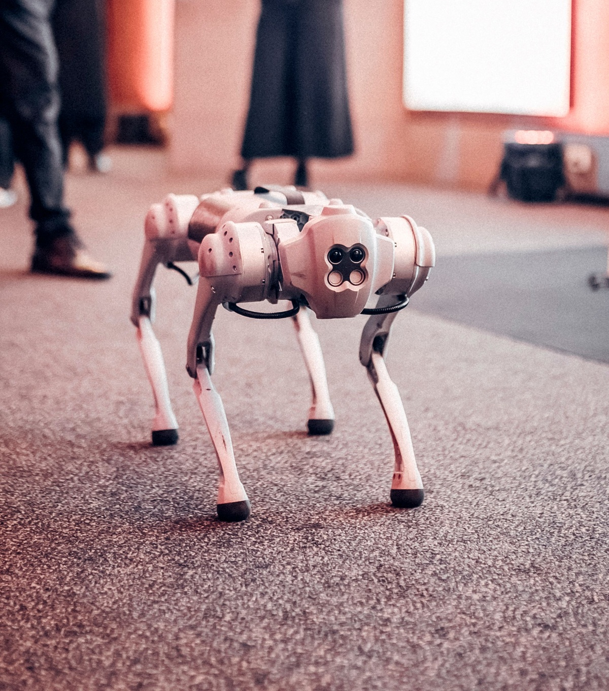
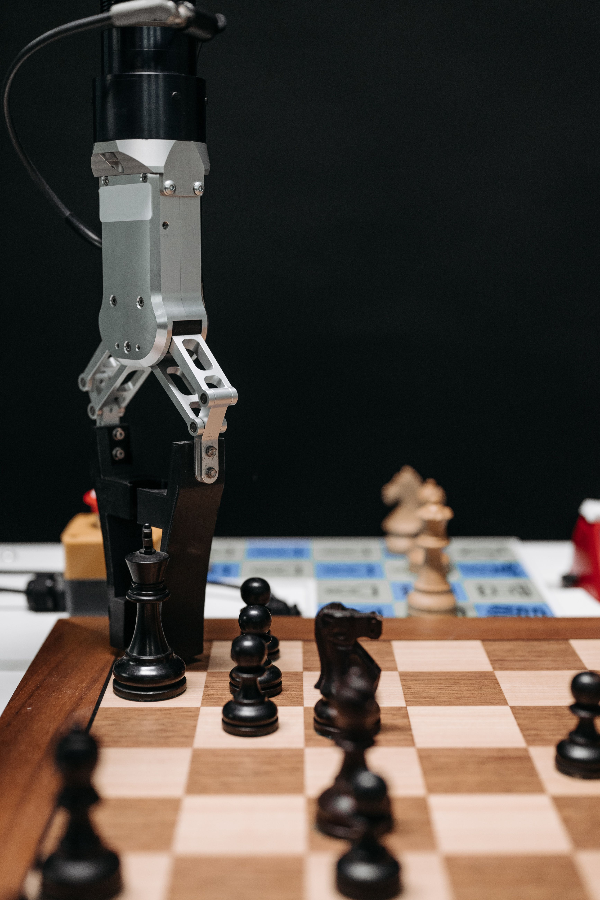

Research labs
Iterate on models without turning the editor into your research stack.
Critter Engine for robotics labs
Give students and researchers a visual workspace for building, inspecting, testing, and sharing robot models—directly in the browser and without giving up standard robotics formats.
Core editor free · No install · Local-first by default

Bring robot models into Critter, inspect the physics, and export them back to your workflow.
Iterate on models without turning the editor into your research stack.
Spend class time on robotics instead of environment setup.
Give the group a shared home without taking the free editor away.

Keep your research workflow at the center.
For research
Bring in an existing robot, investigate what the model is actually doing, and export the result back to the tools your research already uses.
For teaching
Students can open the editor and start exploring without installing Docker, rebuilding a Python environment, or learning XML before they can see a joint move.
Start together
A consistent workspace across student machines, with local editing available without an account.
Learn by seeing
Connect the model hierarchy, joint axes, collision geometry, and inertial choices directly to simulated behavior.
Teach the standard
Critter works with standard robot formats rather than hiding the model. Students can take exported MJCF into code when they are ready.
Choose your boundary
Use the visual editor on its own, or make the assistant part of a lab workflow when it fits the learning objective.

Less setup. More robotics.
Every student starts in the same browser-based editor. When it is time to write code, they can export the model as MJCF and continue in the course's existing programming workflow.
Free for building. Paid for coordinating.
A generous free editor lets every student or researcher begin. Team plans are for the ownership, coordination, and support that appear when the work becomes shared.
Individual
For a student, researcher, or engineer working independently.
Lab or course
For faculty and lab leads who need the work to belong to the group.
If everyone is working independently, the free editor may be all you need. The team plan becomes useful when the lab needs continuity, shared ownership, and coordination.
A shorter path to useful work
Import an existing model or begin with a familiar robot from the library.
Work directly with the physical structure instead of hunting through files.
Exercise joints, constraints, sensors, contacts, and behaviors in the browser.
Export the model or recordings and continue in your research or course stack.
Questions from labs
No. The core in-browser editor is intended to remain free. A paid team plan is for shared lab ownership, coordination, cloud workflows, and assistant access.
No. Critter uses MuJoCo for its browser physics and works with standard robot formats so models can continue into the tools, scripts, controllers, and training workflows your lab already uses.
Yes. Local editing and portable .critter project files work without an account. Cloud projects and sharing are optional.
No. Critter is a visual robot editor and simulation environment without the assistant. Labs can choose whether AI belongs in their research or teaching workflow.
A founding lab pilot
Research or teaching · Small cohort · Direct support